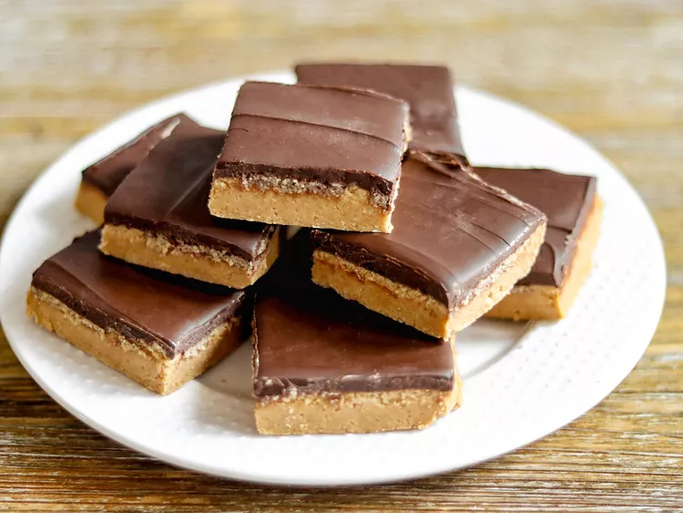

Chocolate Peanut Butter Bars
Home

Description
These bars are a classic blend of peanut butter and chocolate. Easy to make, and quick to satisfy!
Ingredients
- 2 ½ cups graham cracker crumbs
- 1 cup peanut butter
- 1 cup butter, melted
- 2 cups semisweet chocolate chips
- 2 ¾ cups confectioners' sugar
Steps
- In a medium bowl, stir together graham cracker crumbs, confectioners' sugar, peanut butter and melted butter.
- Press firmly into the bottom of a 9x13 inch pan. Melt chocolate chips over a double boiler or in the microwave, stirring occasionally.
- Spread melted chocolate over the crumb crust. Chill for about 5 minutes, then cut into bars before the chocolate is completely set, then chill until ready to serve.
Check out more recipes